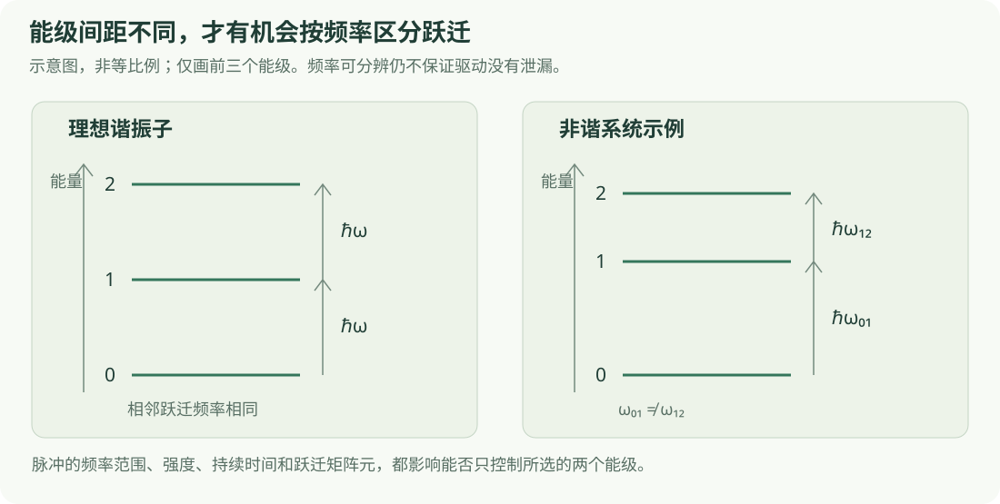

Q3｜从能级到物理量子比特
Q2讨论能量测量和时间演化，主篇第 02 章则直接从抽象的 ∣0⟩,∣1⟩ 出发。本章把两边接起来：实验室里怎样从一个有许多自由度、许多能级的器件中选出两个状态，怎样用带频率的场驱动它们，以及这种“两能级语言”在什么条件下会失效。
先记住本章最重要的一句话：量子比特是选定并受控的二维子空间，不是声称真实器件只有两个能级。
第一次阅读可先读 §1–4：它们只问能级相隔多远、温度和脉冲会不会把系统带离所选的两级。§5 给另一类自旋实例；§6 的前半推导会用旋转坐标系和微分方程，若只是想知道“共振、失谐、振荡幅度”各是什么意思，可先看 §6 的模型式与“失谐”算例，回头再做完整推导。§7–8 把理想两级接到噪声与不同物理平台。暂时跳过标为进阶的代数，不影响主篇硬件章的第一遍理解。
1. 同一个能隙的三种写法
设两个能量本征态为 ∣0⟩,∣1⟩，且 E1>E0。能隙
ΔE=E1−E0
可以用普通频率 f 或角频率 ω 表示：
ΔE=hf=ℏω,ω=2πf,h=2πℏ.
f 的单位是 Hz，也就是每秒多少个周期；ω 的单位是 rad/s。两者都描述同一个能隙，但相差 2π。若实验写“5 GHz 量子比特”，通常是在报 f01=(E1−E0)/h，不是 ω01。
可以先用一秒钟的钟表来记：一个完整周期转一圈，所以每秒 f=1 个周期就对应每秒 2π 弧度，即 ω=2π rad/s。每秒 5 个周期则是 10π rad/s；把“5”换成“50 亿”，关系仍相同。h 与 ℏ=h/(2π) 只是分别配合这两种频率写同一个能量，不能把 5 GHz 直接代入 ℏω 却忘了先乘 2π。
算例：5 GHz 对应多大能量
用 SI 中的精确值 h=6.62607015×10−34 Js：
ΔE=h(5×109 s−1)≈3.313×10−24 J.
它约为 20.7 μeV。也可以先算
kBΔE=kBhf≈0.23996 K,
这个“以 kelvin 表示的能量尺度”方便与温度比较，但不表示量子比特本身就是一支温度计。
频率匹配也不是“只要 hf=ΔE 就一定发生跃迁”。控制场还要通过某个物理算符与系统耦合，并且相应矩阵元不能为零。例如电偶极驱动的跃迁强弱由偶极算符在两个态之间的矩阵元决定；对称性可能使某些能量匹配的跃迁仍被选择定则压低。真实谱线还有有限宽度，脉冲也不是无限长的单一频率。因此 ΔE=hf 给出共振中心，耦合矩阵元、线宽和脉冲包络才决定实际跃迁速度与选择性。
2. 两能级为什么只是受控近似
真实系统通常有更多状态。把其中两个态选作计算基，需要同时满足：
- 可制备：能把大部分概率放入选定子空间；
- 可选择地控制：驱动 ∣0⟩↔∣1⟩ 时，不显著激发别的跃迁；
- 可读出：测量记录能可靠地区分两个逻辑态；
- 可保持：环境在计算期间不会迅速造成弛豫、退相位、丢失或泄漏；
- 可组合：两比特相互作用不会在门结束后留下未消除的辅助自由度纠缠。
这里的泄漏是状态离开计算子空间。例如状态从 transmon 的 ∣1⟩ 跑到 ∣2⟩，不是普通的 ∣0⟩↔∣1⟩ 翻转。另一方面，辅助态不一定是坏事：离子门会暂时使用运动模，中性原子门会暂时使用 Rydberg 态，也就是主量子数很高、相互作用很强的原子高激发态。关键是门结束时是否把辅助自由度复位并与逻辑量子比特解除纠缠。
因此“二能级近似有效”不是一个永远成立的标签，而是对制备、脉冲强度和带宽、噪声、读出以及实验时长共同作出的判断。
先用三能级数字看“泄漏”究竟数什么：若一轮门操作后测得 ∣0⟩,∣1⟩,∣2⟩ 的概率依次为 0.10,0.85,0.05，前两项仍在约定的计算空间内，第三项已跑出去，所以泄漏概率为 0.05=1−(0.10+0.85)。这与“把 ∣0⟩ 错翻成 ∣1⟩”不同；后者仍在前两级之内。
对更多能级及混合态，同一想法可以写成可测量的量。令
Pcomp=∣0⟩⟨0∣+∣1⟩⟨1∣
为投影到计算子空间的算符。对完整器件状态 ρ，计算空间外的总概率可定义为
L=1−Tr(Pcompρ).
L=0 只说明此刻没有泄漏，并不证明子空间内的门是正确的；一个错误的 Z 相位门仍可有 L=0。上面三能级例子里，Tr(Pcompρ) 正是 0.10+0.85=0.95。反过来，若读出装置只能把 ∣2⟩ 错归为 0 或 1，仅看二元计数也可能看不见 L。实验必须说明泄漏是被直接分辨、通过额外校准估计，还是根本没有进入所报指标。
3. 温度怎样影响二能级占据
先考虑一个与温度为 T 的热库达到平衡、两个能级都非简并的理想模型。Boltzmann 权重给出
p0p1=e−ΔE/(kBT),
而 p0+p1=1，所以
p1=1+eΔE/(kBT)1.
算例：5 GHz 在 20 mK 与 300 K
上一节已算得 ΔE/kB≈0.23996 K。
在 T=20 mK=0.020 K 时，
kBTΔE≈11.998,p0p1≈e−11.998≈6.16×10−6,
p1≈6.16×10−6.
同一个平衡二能级模型在 300 K 时给出
kBTΔE≈7.999×10−4,
p0p1≈0.999200,p1≈0.499800.
高温时两个能级几乎各占一半，几乎不能靠被动等待初始化。这个比较解释了为什么微波频段器件需要深低温，却不能被读成某台设备的真实性能：
- 300 K 下，真实弱非谐振荡器的许多更高能级也会被热占据，二能级截断本身已经不可靠；
- 20 mK 是冷台温度，不自动等于量子比特的有效温度；热辐射泄漏、非平衡准粒子、读出回热和不充分热化都可能提高实测激发占据；
- 根据 p1 反推“有效温度”还假设占据确实服从热平衡分布，不能用它概括所有非平衡误差。
如果在同一平衡二能级假设下测得激发态占据 0<p1<1/2，可反解
Teff=kBln[(1−p1)/p1]ΔE.
例如 5 GHz 系统若测得 p1=1%，便得到 Teff≈0.23996/ln99≈52.2 mK。这个数是把一个占据比压缩成温度参数；若激发来自周期性串扰或非热准粒子，它仍能算出来，却不代表环境真的处于 52.2 mK 的热平衡。
4. 等间距振荡器为何难以充当量子比特
理想量子谐振子的能级是
En=ℏωr(n+21),n=0,1,2,…
这个结论的升降阶算符推导见Q4。本章只使用它判断控制选择性：谱图上画出多条水平线并不够，真正重要的是相邻线之间的能量差是否相同，以及控制算符能连接哪些态。
因此相邻跃迁频率完全相同：
ω01=ω12=ω23=⋯=ωr.
若一个驱动能使 ∣0⟩↔∣1⟩ 共振，它也在同一频率上面对 ∣1⟩↔∣2⟩。这使“只控制最低两级”缺乏频谱选择性。
若方案要靠频率选择把某个振荡模式的最低两级隔离成量子比特，就需要某种非线性，让相邻间隔不再完全相同。对前三个能级可定义角频率非谐性
α=ω12−ω01.
transmon 用约瑟夫森结提供非线性。这里 EJ 是约瑟夫森能，EC 是充电能；两者的比值 EJ/EC 决定设计所处的工作区间。在固定 EC、进入 transmon 的大比值近似时，增大 EJ/EC 会迅速压低电荷色散（能级随偏置电荷变化的幅度），其主导因子含 exp[−8EJ/EC]。若设计时 EC 也改变，绝对频率单位的色散还受前面的系数影响，不能只凭比值推断具体 MHz 数字。代价是相邻跃迁间隔相对于主跃迁频率变得更接近。要把“非谐性变小”说准确，必须分清两个量：本节定义的绝对角频率差 α=ω12−ω01，以及无量纲的相对非谐性 ∣α∣/ω01。
在 EJ/EC≫1 的近似下，低能级满足 ℏω01≈8EJEC−EC、ℏα≈−EC，所以
ω01∣α∣≈8EJEC−ECEC≈8EJEC.
最后一个近似还要求 8EJEC≫EC。例如保持 EC 不变、只增大 EJ 时，∣α∣≈EC/ℏ 在这一阶近似中几乎不变，变小的是它与不断升高的 ω01 的比值；若设计时维持 ω01 大致不变而减小 EC，绝对间隔 ∣α∣ 才会随之缩小。文献所说“随 EJ/EC 增大，非谐性只按较慢的幂律下降”，主要指相对非谐性，不能不说明固定了哪些器件参数就直接套到 MHz 差值上。这是抗电荷噪声与可选择控制之间的设计折中；原始推导见 Koch 等人的 transmon 论文。transmon 仍有 ∣2⟩,∣3⟩,…，不是一枚真正的二能级“人工原子”。
这段话不是说等间距谐振模式不能承载量子信息。连续变量计算、GKP 等玻色编码正会利用振荡器的更大 Hilbert 空间，并以非高斯资源、辅助非线性或测量来完成控制。这里讨论的困难只针对“把同一模式的最低两个 Fock 能级当成可按频率单独寻址的裸量子比特”。

打开原尺寸图 ↗
图只比较“相邻间隔是否相等”，纵向距离非等比例；不能从线段长度读出真实 GHz 数值。
算例：门越快，为什么越容易碰到 ∣2⟩
假设一个教学模型有
f01=5.0 GHz,f12=4.8 GHz,
所以 α/2π=−0.2 GHz=−200 MHz。这组数只是算例，不是任何厂商器件指标。
持续时间尺度为 τ 的脉冲，其频谱宽度量级通常为 1/τ；精确常数取决于矩形、Gaussian、cosine 等包络。若 τ=20 ns，量级为 50 MHz；若压到 5 ns，量级升到 200 MHz，已经与本例的 ∣α∣/2π 同量级，驱动更容易覆盖 ∣1⟩↔∣2⟩。
这不是说“脉冲只要长于 1/∣α∣ 就绝不会泄漏”。驱动幅度、跃迁矩阵元、包络旁瓣、失谐、线路响应和多光子过程都会参与。DRAG 一类方法在正交通道加入与主包络导数相关的分量，用相消思路抑制弱非谐系统的泄漏；参数仍需校准。
时间与频谱的制约也不是要求门无限慢。慢脉冲会增加系统暴露在弛豫和低频漂移中的时间，快脉冲则增加宽带激发与波形失真的风险。控制设计是在这两类误差之间寻找可校准的工作点。评价一个“更快的门”时，至少还应同时查看泄漏、相位误差、邻近量子比特串扰和门后残余激发，而不能只比较脉冲长度。
4.1 S71-Q3：矩形脉冲的谱零点，为什么不是零泄漏保证
前面的 1/τ 给出频谱宽度量级，没有给出每个频率的权重。题目与模型。 单独研究一个不希望被激发的跃迁 ∣a⟩↔∣b⟩；初态为 ∣a⟩，其角频率失谐为 δ。相互作用绘景中的矩形弱驱动写为
HI(t)=2ℏΩab(eiδt∣b⟩⟨a∣+e−iδt∣a⟩⟨b∣),0≤t≤τ.
Ωab 和 δ 的单位均为 rad/s；Ωab 已包含这一跃迁的矩阵元，不一定等于计算跃迁的 Rabi 频率。取弱脉冲面积 Ωabτ=0.1 rad，δ/2π=200 MHz，分别算 τ=2.5,5,10 ns 的一阶跃迁概率。
从振幅积分开始。 一阶时间依赖微扰只保留一次相互作用：
Aa→b(1)=−ℏi∫0τ⟨b∣HI(t)∣a⟩dt=−2iΩab∫0τeiδtdt.
对 δ=0，积分为 (eiδτ−1)/(iδ)。用 eix−1=2ieix/2sin(x/2)，写成保留相位的形式：
Aa→b(1)=−i2Ωabτeiδτ/2sinc(2δτ),sinc(x)=xsinx,sinc(0)=1.
先取模平方，得到 P(1)=(Ωabτ/2)2sinc2(δτ/2)。指数相位的模为 1，不能把它当成额外衰减。以 Hz 写失谐 δf=δ/(2π) 时，sinc 的自变量是 πδfτ。首个非零频谱零点满足 ∣δf∣τ=1，这也给前文的 1/τ 量级一个精确定义：矩形包络从谱中心到第一零点的频率距离。
此表固定的是面积，所以缩短时长同时提高了 Ωab，不是固定驱动幅度比较。更一般地，应把真实包络代入复积分；滤波、时间误差或失谐漂移会移动这些相消位置。
 打开原尺寸图 ↗
打开原尺寸图 ↗
图中纵轴是无量纲概率，横轴为 ns；圆点标出题中三个时长，虚线标出谱零点。原尺寸 SVG和公式生成器可独立打开。
横轴的 τ=0 仅表示固定面积公式的数学极限：Ωab=0.1/τ 在此发散。真实控制器幅度有限，且须满足 RWA 等条件，因此不能从曲线原点推断能零时间完成有限旋转；实际时长范围必须依据器件重新限制。
零点为何仍不是完整答案。 对同一个孤立的恒驱动两态问题，§6 的精确 Rabi 式给
Pexact=Ωab2+δ2Ωab2sin2(2τΩab2+δ2).
在 τ=5 ns、面积 0.1 的点，一阶项是零，精确值却约为 4.009×10−11；高阶项没有被一阶积分保证消失。更不能把本题直接当成完整 transmon 的 ∣1⟩→∣2⟩ 泄漏：真正的 π 门同时强烈改变 ∣0⟩,∣1⟩ 振幅，三能级耦合、2 量级的矩阵元差异、动态相位与线路响应都参与，须解完整模型并实验校准。
运行 round71_checks.py 的 --case q3，以中点复数积分独立核对解析振幅，再对照孤立两态的精确解，检查零失谐极限。计算基础参见 MIT 原始两能级课程资料；弱非谐多级控制与 DRAG 的边界参见 Motzoi 等原论文（2009，来源访问 2026-10-13）。图是本文公式生成的教学数据，不是实验频谱。
5. 自旋两级：先看磁矩符号，再贴 0 和 1
自旋角动量与磁矩可写成
μ=γS,
其中旋磁比 γ 可以为正，也可以为负。磁场中的能量是
H=−μ⋅B.
取 B=Bz^ 且 S=ℏσ/2：
H=−2γℏBσz.
能隙大小为
ΔE=∣γ∣ℏB,ω0=∣γ∣B.
哪一个自旋投影能量更低取决于 γ 的符号。电子的磁矩与自旋方向相反，某些原子核的符号又不同。因此“沿磁场就是 ∣0⟩”或“spin up 永远是激发态”都不是通用规则。
一种不易出错的做法是：先由 H=−μ⋅B 判定高低能态，再把低能态命名为逻辑 ∣0⟩、高能态命名为逻辑 ∣1⟩。若沿用全书的 Pauli 约定 Z∣0⟩=∣0⟩、Z∣1⟩=−∣1⟩，去掉不影响动力学的共同能量后，自由 Hamiltonian 可写成
H0=−2ℏω0Z.
若另一篇文章写成 +ℏω0Z/2，它可能交换了能量基标签或采用相反的 Z 定义；先查定义，不要只凭正负号判断物理态。
“自旋量子比特”也不一定就是一颗裸电子的两个朝向。单重态—三重态量子比特把两个电子的联合自旋态编码成二维子空间，交换型编码还会使用三个或更多自旋。它们依然可以由有效的 2×2 Hamiltonian 描述，但有效 X,Y,Z 作用在编码子空间上，不能逐字解释为某一颗电子绕三个空间轴旋转。
6. 从实验室驱动到 Rabi 振荡
为了把符号问题与驱动推导分开，本节定义能量基算符。Q2 用 H 区分 Hamiltonian 与 Hadamard 门；本节为贴近控制文献改用 H，这里出现的 H 都指 Hamiltonian。
ZE=∣1⟩⟨1∣−∣0⟩⟨0∣,X=∣0⟩⟨1∣+∣1⟩⟨0∣.
这里 ∣0⟩ 是低能态、∣1⟩ 是高能态，所以 ZE=−Z，其中右边的 Z 是全书常用计算基 Pauli 矩阵。实验室坐标系中的半经典驱动模型写成
Hlab(t)=2ℏω0ZE+ℏΩcos(ωdt+ϕ)X.
这就是常见的 ℏω0Z/2+ℏΩcos(ωdt+ϕ)X，但本章保留下标 E，提醒读者这里的 Z 定义在能量基上。下面把第二项简称为 Hd(t)。Ω 已经具有角频率单位；它把驱动场幅度、耦合常数和两个态之间的矩阵元合并成一个有效参数，所以改变实验场强通常会改变 Ω。
6.1 旋转坐标系与旋波近似
取
R(t)=e−iωdtZE/2,∣ψlab⟩=R(t)∣ψrot⟩.
旋转坐标系 Hamiltonian 是
Hrot=R†HlabR−iℏR†R˙.
第二项正好把自由演化的一部分减掉，留下失谐
Δ=ω0−ωd.
再写
σ+=∣1⟩⟨0∣,σ−=∣0⟩⟨1∣,X=σ++σ−.
这一步的二倍因子值得直接展开。由
R†σ+R=eiωdtσ+,R†σ−R=e−iωdtσ−,
以及余弦的指数形式，旋转后的驱动为
R†HdR=2ℏΩ(e−iϕσ++eiϕσ−+ei(2ωdt+ϕ)σ++e−i(2ωdt+ϕ)σ−).
第一行在旋转坐标系中缓慢变化，第二行以约 2ωd 快速振荡。旋波近似（RWA）丢掉第二行，得到
HRWA=2ℏ[ΔZE+Ω(cosϕX+sinϕYE)],
其中 YE=−i∣1⟩⟨0∣+i∣0⟩⟨1∣。为得到概率而不跳步，记
K=ΔZE+Ω(cosϕX+sinϕYE),ΩR=Ω2+Δ2.
X,YE,ZE 两两反对易且平方都是 I，因此交叉项相消：
K2=(Δ2+Ω2)I=ΩR2I.
把 e−iKt/2 的幂级数按偶次与奇次幂分组，和 Pauli 旋转的推导相同，可得
URWA(t)=cos(2ΩRt)I−iΩRKsin(2ΩRt).
因为 ⟨1∣ZE∣0⟩=0，并且
⟨1∣(cosϕX+sinϕYE)∣0⟩=e−iϕ,
初态为 ∣0⟩ 时的激发振幅是
⟨1∣URWA(t)∣0⟩=−iΩRΩe−iϕsin(2ΩRt).
先取振幅的模平方，才得到下一节的 P1(t)；相位 ϕ 会决定旋转轴在赤道面内的方向，但不改变这个特定初态的激发概率。
RWA 需要 ∣Δ∣,Ω≪ω0,ωd，驱动包络相对载频变化缓慢，还要有足够的能级选择性。强驱动时，被 RWA 丢弃的反向旋转快项会使实际共振频率发生小偏移，这称为 Bloch–Siegert 位移；多能级器件还可能在 RWA 对二能级模型尚可时先发生泄漏。
6.2 不多也不少的那个二分之一
实验室 Hamiltonian 的驱动系数是 ℏΩcos(ωdt+ϕ)。因为
cosθ=2eiθ+e−iθ,
RWA 留下的常量驱动系数是 ℏΩ/2。因此在本章约定下，共振时的 Rabi 角频率就是 Ω，不是 Ω/2 或 2Ω。
若初态为 ∣0⟩，定义
ΩR=Ω2+Δ2,
则激发态概率为
P1(t)=Ω2+Δ2Ω2sin2(2ΩRt).
共振时 Δ=0，化为
P1(t)=sin2(2Ωt).
所以 π 脉冲满足 Ωtπ=π，π/2 脉冲满足 Ωtπ/2=π/2。不同教材可能把实验室驱动前的系数命名为 2Ω 或 Ω/2；判断是否差二倍时，必须从完整 Hamiltonian 开始，不能只比较“Rabi frequency”这个名字。
算例：失谐会同时改变振荡幅度和速度
设
2πΩ=10 MHz,2πΔ=6 MHz.
则
2πΩR=102+62 MHz≈11.66 MHz.
第一次达到峰值的时间是
tpeak=ΩRπ=2(11.66 MHz)1≈42.9 ns,
但峰值只有
P1max=102+62102=136100≈0.735.
失谐并非只是“门慢一点”：广义振荡频率反而变大，但旋转轴倾斜，无法把全部概率送到 ∣1⟩。
6.3 S72-Q3：二能级优化得很好，放回三能级会怎样
前面提醒“高保真度两级门不保证无泄漏”，现在用完整实际优化波形给出可复算反例。第 14 章 S72-14 的 GRAPE 在两级模型中实现近乎理想的 Xπ。保持其 40 ns 时长、0.5 ns 槽宽及全部波形不变，将它放入下面的合成三能级模型。
先写矩阵而不是口头说“加一个能级”。 基顺序为 ∣0⟩,∣1⟩,∣2⟩，截断升降算符与粒子数矩阵为
a=000100020,n=a†a=diag(0,1,2).
沿用第 14 章计算基失谐 Δ=ωd−ω0=2π(0.005) rad/ns，非谐性 α=2π(−0.2) rad/ns，取
Hj/ℏ=−Δn+2αn(n−I3)+2ux,j(a+a†)−2iuy,j(a−a†).
漂移对角元依次是 0,−Δ,−2Δ+α。在最低两级中，−Δn 去掉共同能量后正好是 ΔZ/2；控制项也分别约化为 uxX/2,uyY/2。因此这个扩展与第 14 章的符号、二分之一和失谐方向一致。2 则使 1↔2 耦合强于 0↔1，新增能级不是一条与驱动无关的旁观线。
练习。 对输入 0 与 1 分别传播相同波形，计算末态泄漏 Lj=∣⟨2∣U3∣j⟩∣2。二级优化器的 1−g≈6.63×10−12 能否当这两个数的上界？
实际计算与答案。 grape_control.py对每槽计算完整 3×3 指数，得到
L0≈0.0132566,L1≈0.0236287.
约为 1.33% 和 2.36%，都远大于二级优化误差。不是优化器计算错了；它原先的目标函数根本没有这条泄漏通路。末态 U3 保持全三维归一化，但投影回两级的有效矩阵通常不酉。若事后只保留“仍在计算子空间”的记录，分母便改变，须同时报告接受率和条件输出，不能把投影矩阵直接当一扇完美门。
扩展与边界。 这个 RWA 三能级模型还没有真实传递函数、弛豫、退相位、第四能级或器件标定，并非真实 transmon 的工业测试。它已足够反驳“二级优化误差自动约束器件泄漏”。可进一步在三维目标中规定计算子空间的目标作用与非计算态相位，加入泄漏惩罚、鲁棒参数和带宽约束后重新优化；这些属于新的实验设计，本轮未声称已实现受所有约束的最优门。Motzoi 等 DRAG 原论文与 qutip-qtrl 控制说明提供方法入口（访问 2026-10-13）。
6.4 S73-Q3：三维门酉，不表示它的二维限制也酉
第14章已经真正把这套三能级RWA模型纳入GRAPE优化。这里先解释验收的最小恒等式，避免把泄漏隐藏在后选择里。按 ∣0⟩,∣1⟩,∣2⟩ 顺序，把全三维酉的前两列写成
U3(I20)=(Mλ),M∈C2×2,λ=(U20,U21)∈C1×2.
全三维列正交归一意味着
M†M+λ†λ=I2.
这不是近似式。对输入 ∣ψ⟩=c0∣0⟩+c1∣1⟩，泄漏振幅是 λ0c0+λ1c1；先相加再取模平方。因此只知道两种基输入的泄漏 ∣λj∣2，不能把任意叠加输入泄漏简单加权成 ∣c0∣2L0+∣c1∣2L1，交叉相位也参与。
练习一与答案。 取一个合成泄漏行 λ=(0.1,0.1)。输入 ∣+⟩ 的泄漏为 ∣(0.1+0.1)/2∣2=0.02，输入 ∣−⟩ 则为0；两个基输入均为0.01。它们的朴素概率加权都为0.01，恰好漏掉相干的交叉项。这一行可与 M=I2−λ†λ 组成两条正交归一列，再补第三列成为三维酉；故不是违反酉性的反例。
练习二与答案。 对两个基输入等权平均，交叉项不出现，平均存活率为 sˉ=Tr(M†M)/2，平均泄漏正好 (L0+L1)/2。本轮优化实跑 L0=6.2512×10−10,L1=6.1539×10−10，均很小；同一波形经明示1 ns离散滤波后变成0.0095320和0.0051733，平均约0.00735265。真实模型若有第五级或耗散，还需扩展，不把这份三维纯酉输出当作器件门测试。
如果只保留计算空间结果，输出为 M∣ψ⟩/∥M∣ψ⟩∥，接受概率为 ∥M∣ψ⟩∥2；归一化分母依赖输入，不能把这个条件规则无条件称为一个二维酉。第14章 S73-14 的平均目标重叠明确不丢弃泄漏，并以六输入复算。
三维完整SDK优化、80槽波形与标准库独立传播的 --case q3 保持相同失谐方向、rad/ns单位、基序与右先时间序。方法背景见弱非谐泄漏原论文（2009，访问2026-10-13）；这里采用三维GRAPE，不把它冒称已运行DRAG或所有约束下的鲁棒优化。
7. 退相干可以从系统—环境纠缠看见
设系统初态为 α∣0⟩+β∣1⟩，环境初态为 ∣E⟩。联合酉演化可能把它变成
∣Ψ(t)⟩=α∣0⟩∣E0(t)⟩+β∣1⟩∣E1(t)⟩.
整个“系统加环境”仍是纯态。若只看系统，就要对环境做偏迹：它忽略环境记录，同时保留所有只作用于系统的测量统计。取环境的一组正交归一基 {∣ej⟩E}，定义
ρS=TrE(∣Ψ⟩⟨Ψ∣)=j∑E⟨ej∣Ψ⟩⟨Ψ∣ej⟩E.
这个求和会把环境部分的外积收缩成内积；完整定义和 Bell 态算例见第 03 章的偏迹小节。代入上面的联合态得到
ρS(t)=[∣α∣2α∗β⟨E0∣E1⟩αβ∗⟨E1∣E0⟩∣β∣2].
环境态越能区分两个逻辑分支，重叠 ∣⟨E1∣E0⟩∣ 越小，系统相干项越弱。若两环境态正交，环境原则上保存了完整“走哪条分支”的信息，系统单独看就完全退相干。
这也解释了为什么“没有人读取环境”并不能阻止退相干。关键不是某位观察者是否查看记录，而是环境的不同物理状态是否已经与两个逻辑分支相关联。若全部环境自由度都能精确反演，联合信息原则上没有丢失；真实装置中环境自由度极多且不可控，系统的相位信息便难以恢复。回波脉冲能抵消一部分缓慢、近似可逆的相位漂移，却不能自动撤销任意系统—环境纠缠。
这个模型主要展示纯退相位。若系统还把能量交给环境，就会出现 ∣1⟩→∣0⟩ 的弛豫。密度矩阵、振幅阻尼、退相位以及 T1,T2 的完整模型见第 05 章。
8. 同样是量子比特，不同平台选的“两个态”不同
光子行尤其容易误解。偏振和双轨编码都是“一个光子占据两个正交模式之一”：
∣0L⟩=∣10⟩ab,∣1L⟩=∣01⟩ab.
这里两个 ket 位分别是模式 a,b 的光子数。它不等于单轨编码 ∣0L⟩=∣0 photon⟩、∣1L⟩=∣1 photon⟩。在双轨方案里，真空 ∣00⟩ 通常是丢失或擦除事件，不是合法逻辑 0。
离子和中性原子的“两个内部态”也不要与门过程的全部状态混为一谈。离子纠缠门常把内部态振幅暂时映到共享振动模；中性原子常把计算态暂时耦合到短寿命 Rydberg 态以获得强相互作用。理想门要求这些辅助自由度在末态回到预定状态。若没有回来，即使对计算基两态的最终计数看似合理，也可能留下泄漏或与未观测自由度的纠缠。
这张表是通往第 09 章硬件路线的桥梁：抽象矩阵相同，不代表制备、门、泄漏、热化、读出和扩展成本相同。
9. 常见误区
- “量子比特是二能级系统”不等于真实器件只有两个态。
- 5 GHz 与 5×109 rad/s 不相等；普通频率和角频率相差 2π。
- 冷台为 20 mK 不保证量子比特服从第 3 节所用的热平衡 Boltzmann（Gibbs）分布。
- 脉冲越短不一定越好；速度、频谱选择性、失谐和泄漏互相制约。
- “spin up”不是跨粒子、跨符号约定都固定为基态或激发态。
- Rabi 频率的二倍因子取决于 Hamiltonian 中怎样定义驱动幅度。
- 光子偏振或双轨量子比特的逻辑 0 通常不是“没有光子”。
- 退相干不要求整个宇宙做非酉演化；系统与环境的联合演化可以仍是酉的。
10. 自检
- f=6 GHz 的能隙是多少 joule？对应的 ΔE/kB 是多少 kelvin？
- 在平衡非简并二能级模型中，f=4 GHz、T=50 mK 时的 p1/p0 和 p1 各是多少？
- 为什么“只保留两个能级”必须同时检查制备、控制、读出和环境？各举一个超导与离子例子。
- 教学模型取 f01=5.00 GHz、f12=4.75 GHz。估计 4 ns 脉冲的频谱宽度量级，并说明它为什么提示泄漏风险，却不能单独给出泄漏概率。
- 对 H=−γℏBσz/2 且 B>0，分别讨论 γ>0 和 γ<0 时哪个 σz 本征态能量更低。为什么不能先把“spin up”固定叫作 ∣0⟩？
- 在本章驱动约定下，取 Ω/2π=4 MHz、Δ/2π=3 MHz。求广义 Rabi 频率、最大激发概率和第一次达到最大值的时间。
- 若系统—环境态中的 ⟨E1∣E0⟩=0.3eiθ，系统密度矩阵的两个占据概率是否改变？相干项的模变成初始值的多少？
- 写出双轨光子量子比特的两个逻辑基态，并说明 ∣00⟩ab 为什么通常不是逻辑 0。
答案见练习与答案：量子力学 Q3。
新增诊断练习：只看 Rabi 布居，能否知道失谐的正负
题目。 在 §6 的理想恒幅两能级 RWA 模型中，设 Ω/2π=10 MHz，两个候选失谐为 Δ/2π=+6 MHz 与 −6 MHz。从 ∣0⟩ 出发，测量 50 ns 后的激发概率，能否区分正负失谐？若把整个时长扫描完，又能否区分？
第一步：先检查公式怎样依赖未知参数。
P1(t;Δ)=Ω2+Δ2Ω2sin2(2Ω2+Δ2t)=P1(t;−Δ).
两处都只含 Δ2。代入本题数值，在 t=50 ns 时两者都约为 0.686313；即使没有噪声、采无限多点，整条布居振荡曲线也相同。这是该实验对参数符号的不可辨识性，不是再多采样就一定能解决的精度不足。换驱动频率进行额外扫描会改变实验设计，当然可提供新信息。
第二步：加一个能区分符号的相位实验。 为避免与 §6 的 ZE=−Z 混淆，这里单独声明有效 Ramsey 模型为 Heff=ℏδZ/2，δ 是这个约定中的有符号角频率。先制备 ∣+⟩，等待 τ 后
∣ψ(τ)⟩∼2∣0⟩+eiδτ∣1⟩,⟨X⟩=cos(δτ),⟨Y⟩=sin(δτ).
只测 X 仍分不出正负；测 Y 才读出正弦的符号。若 δ/2π=±6 MHz，选 τ=1/(4×6 MHz)≈41.667 ns，理想 Y 期望分别为 +1,−1。若沿用 §6 的自由项 ℏΔZE/2，应代入 δ=−Δ，不能跨约定直接复制正负号。
运行 python3 codes/foundations/diagnostic_lab.py --case q3，从旋转矩阵而非只从正弦公式核对 Ramsey 两个结果。真实实验还要校准 Y 测量的脉冲相位、时间零点与参考振荡器；本题不宣称这些理想概率是设备测量值。控制标定的核心不只是拟合得更精确，还包括判断所选实验能否区分待估参数。
配套数值实验与展开答案
用统一 SI 单位计算三个温度的热占据，并从二维 Hamiltonian 核对失谐 Rabi 的峰高和峰值时间。程序采用负指数形式，避免极低温计算的正指数溢出。
题目和逐步解答见基础实验册，本章程序编号为 q3。可从代码说明进入独立脚本与保存的运行结果。所有模拟样本均明确标作合成数据，不是硬件实验。
参考起点
- NIST, Meet the Constants：SI 中 h 与 kB 的精确值。
- MIT OpenCourseWare, Two-Level System with Static and Dynamic Coupling：旋转坐标系、失谐与 Rabi 振荡。
- MIT OpenCourseWare, 22.51 Course Notes, Chapter 5: Time evolution：自旋磁矩、进动与二能级共振。
- J. Koch et al., Charge-insensitive qubit design derived from the Cooper pair box, Physical Review A 76, 042319 (2007)：transmon 的电荷色散与非谐性折中。
- F. Motzoi et al., Simple Pulses for Elimination of Leakage in Weakly Nonlinear Qubits, Physical Review Letters 103, 110501 (2009)：弱非谐系统中的泄漏与 DRAG 思路。
- H. Jeong et al., Entanglement and teleportation between polarization and wave-like encodings of an optical qubit, Nature Communications 9, 4997 (2018)：偏振/双轨与单轨、连续变量编码的区分。
- S. J. Evered et al., High-fidelity parallel entangling gates on a neutral-atom quantum computer, Nature 622, 268–272 (2023)：超精细基态量子比特、ground–Rydberg 驱动与并行纠缠门的一手实验。